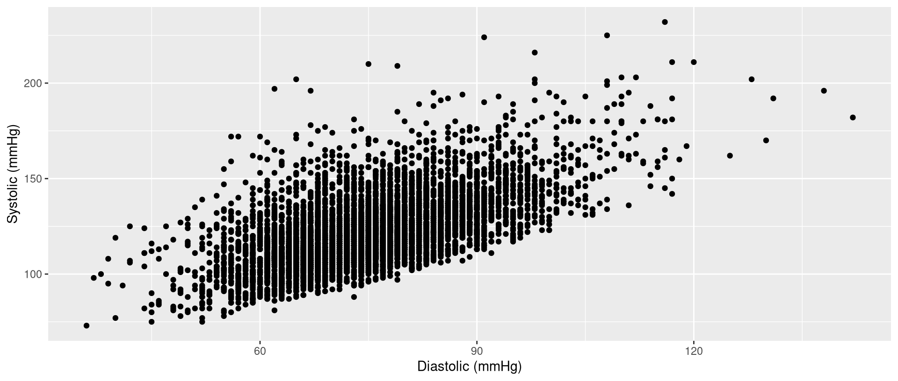

sqrt(64)
#| [1] 8
64 |> sqrt()
#| [1] 8Data Wrangling in R
UCSF Library
Friday, January 15, 2027
sqrt()function(argument)|> function()sqrt()ggplot scatterplot
ggplot scatterplotdata argument in ggplot()subset() within head()subset() into two uses to make it even easier to read:data argumentdplyr%>%|>|> function()|> function()mean()na.rm argument in mean()head()nhanesn argument in head()head() and dim()Create a script for today’s session.
Include code at the top for importing the NHANES data file. Hint: you might first use RStudio’s built-in import tool, as explained here.
Use piping to round() \(\pi\) to 3 digits. Hint: \(\pi\) is a built-in number in R, stored as pi.
Use piping with nrow() to find the number of rows in the data.
Use piping with tail() to view the last 3 rows of the data.
Use piping with names() to view all the variable names.
Use piping with names() and head() to view the first few variable names.
minidata are:subset()subset() with pipingUse piping to subset the data to individuals with a history of smoking (smoking). Hint: first use table() or unique() to see the unique values of smoking.
Use piping with subset() to subset the data to individuals who are 25 years of age or younger.
Add code to the top of the script for loading ggplot2.
Use piping with ggplot() to make a scatterplot with diastolic blood pressure (bpxodi1) on the x axis and systolic blood pressure (bpxosy1) on the y axis, subsetting to individuals who are 65 years of age (ridageyr) or older and not missing a measurement of systolic blood pressure. Hint: you can use is.na().
subset()’s selectasthma and smoking variables:subset()’s select with pipingsubset()’s selectridageyr variable:ridageyr variableminidata remains untouchedminidata:subset()’s select with pipingminidata now looks like this:subset()’s select with pipingridageyr and smoking variables with piping:c()subset()’s select with pipingminidata now looks like this:Use piping with subset() to select just the ridageyr, country, and smoking variables.
Use piping with subset() to obtain a version of the data without the smoking variable. You do not need to replace the original data.
Use piping with subset() to obtain a version of the data without the country and smoking variables. You do not need to replace the original data.
transform()transform() function:transform() returns a version of minidata with a new variable added called new_variable= 1 defines the values of new_variableminidata <-?transform()= definition of new variabletransform() with pipingminidata now looks like this:transform() with pipingbmxht to inches:minidata now looks like this:replace() strategy for defining missing values from Session 6 of A Slower Introduction to R can be combined with transform() and piping:is.na() and object assignmentwithin() and piping:ltpa_vigorous looks like this:pad820 looks like this:transform() and pipingfactor():base_match() from my baseverse package:country looks like this:dmdborn4 looks like this:cut():base_when() from my baseverse package:cholesterol looks like this:lbxtc looks like this:Use piping and transform() to define a new variable for weight (bmxwt) in pounds. Hint: bmxwt is in kilograms and there are 2.204623 pounds in 1 kilgoram.
Use piping, transform(), and factor() to define a new variable called sex. This should be a labelled version of the original gender variable (riagendr). Values of 1 are used for males and values of 0 are used for females. Not:, this should end up matching the existing gender variable.